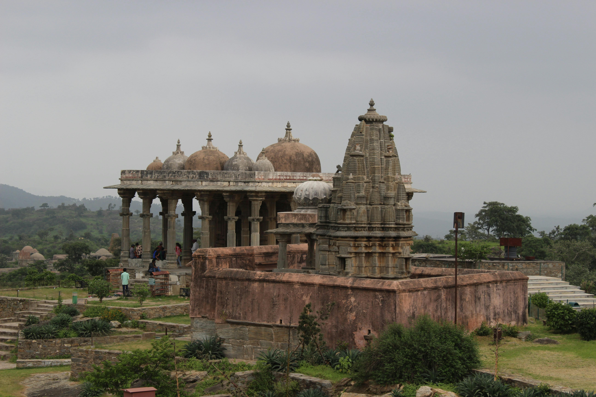
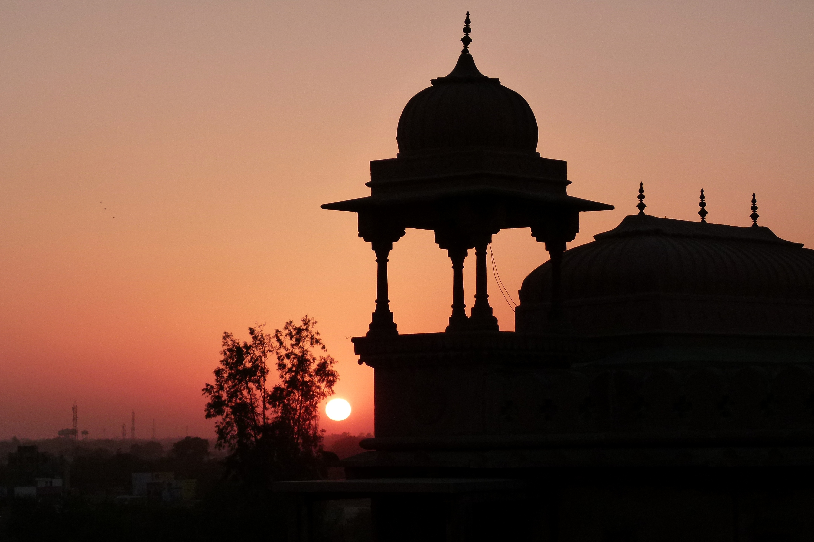

Rajasthan Desert
Rajasthan is renowned for its vast, arid deserts, including the Thar Desert. Camel safaris, desert camps, and stunning sand dunes are just a few of the experiences you can enjoy while visiting this part of the state.

Rajasthan Forts
Rajasthan boasts some of India’s most magnificent forts, like the Amber Fort, Mehrangarh Fort, and Jaisalmer Fort. These historic structures offer breathtaking views and tell the story of Rajasthan's royal past.

Rajasthan Palaces
Explore the grandeur of Rajasthan’s palaces, including the City Palace in Udaipur and the Hawa Mahal in Jaipur. These architectural wonders reflect the splendor of Rajasthan's royal heritage.
1. Popular Tourist Attractions
Deserts
- Thar Desert: Known for camel rides, sand dunes, and desert camps.
- Pushkar Desert: A more serene desert experience with the famous Pushkar Lake and temple.
Forts
- Amber Fort: A majestic hilltop fort in Jaipur with a rich history.
- Mehrangarh Fort: A massive fort in Jodhpur offering panoramic views of the city.
- Jaisalmer Fort: A UNESCO World Heritage Site and one of the largest living forts in the world.
Palaces
- City Palace: A grand palace complex in Udaipur, showcasing royal architecture and art.
- Hawa Mahal: A beautiful palace in Jaipur, known for its unique windows designed to let cool breezes pass through.
Cultural and Historical Attractions
- Jaipur: Known as the "Pink City," with attractions like the Jantar Mantar and Hawa Mahal.
- Jodhpur: Famous for its blue buildings and the magnificent Mehrangarh Fort.
- Udaipur: Known for its serene lakes and palaces, like the Lake Palace and Jag Mandir.
2. Cuisine
- Dal Baati Churma: A traditional Rajasthani dish of lentils, round wheat rolls, and a sweet dish.
- Gatte ki Sabzi: A curry made from gram flour dumplings, often served with rice or roti.
- Laal Maas: A spicy mutton curry known for its fiery heat and bold flavors.
- Ker Sangri: A dish made with dried ker berries and sangri beans, typical of Rajasthan's desert regions.
3. Festivals
- Pushkar Camel Fair: A vibrant event celebrating Rajasthan’s desert culture with camel races, dances, and folk music.
- Desert Festival: Held in Jaisalmer, it showcases Rajasthan’s folk music, dance, and camel polo.
- Teej: A festival celebrating the monsoon season, primarily in Jaipur and Udaipur.
- Gangaur: A festival honoring Goddess Parvati, celebrated with processions and rituals across Rajasthan.
4. Unique Experiences
- Camel Safari: Explore Rajasthan’s desert landscape on camelback, experiencing local villages and traditional lifestyles.
- Hot Air Balloon Ride: Enjoy breathtaking aerial views of Rajasthan’s forts, palaces, and desert.
- Rajasthani Folk Music & Dance: Attend a cultural performance to experience the lively traditional music and dance of Rajasthan.